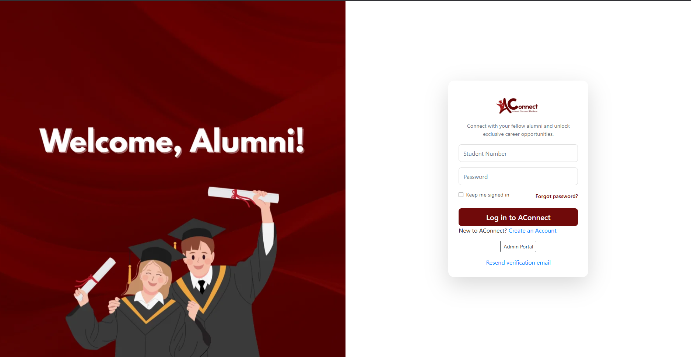

Experience & Projects
Internship Trainee
My Own EVA · Internship
Aug 2024 - Nov 2024 · 4 mos
California, United States · Remote
- Completed a remote internship as a Trainee in Web Design and Development at My Own EVA from August to November 2024.
- Gained practical experience using design tools like Figma and Canva to create website wireframes and layouts, focusing on user experience and visual consistency.
- Developed and edited websites using platforms such as GoDaddy and WordPress for various clients, including Carson Dental Care and Bellezza Skincare.
- Managed multiple projects, including comprehensive wireframing for AG Global Senior Care Management and Angel Care Palliative, and enhancing websites for responsiveness.
- Acquired a strong skill set in aligning design concepts with client brand identities, and applying technical knowledge to create functional, aesthetically pleasing websites.

Web Design
Web Development
Figma
WordPress
Canva
Immersion
Creotech Philippines Inc. · Internship
Sep 2020 - Oct 2020 · 2 mos
Dasmariñas, Calabarzon, Philippines · On-site
- Studied and documented company production processes.
- Assisted in the manufacturing of Printed Circuit Boards (PCBs), gaining hands-on technical experience.
Manufacturing
PCB Assembly
Documentation
AConnect: Alumni Engagement & Career Platform
sdcaconnect.onlineA Web App for Enhancing Alumni Engagement and Career Opportunities
- Developed a web application to address high youth unemployment by centralizing job searching and professional networking for alumni.
- Engineered a full-stack system using CodeIgniter and PHP for the backend, with a MySQL database, and designed the user interface with Figma.
- Integrated key features including a job posting board, a networking module for alumni connections, and a chat support system, which enhanced communication and career growth within the community.
- Contributed to improving alumni engagement and strengthening the institution's reputation by providing a platform for professional support.

CodeIgniter
PHP
MySQL
Figma
Web Design
IoE Based Carbon Monoxide Monitoring System
Arduino & ESP32 IntegrationAn Internet of Everything (IoE)-based system for real-time environmental monitoring
- Designed and implemented an Internet of Everything (IoE)-based system to monitor and report real-time carbon monoxide levels.
- Integrated Arduino and an MQ gas sensor with an ESP32 Dev Board to collect and process air quality data.
- Developed a mobile application using C# and the Maui.net framework to provide users with real-time alerts and data visualization, enhancing environmental safety.
- Adhered to the Agile methodology for development, ensuring continuous progress and adaptability based on feedback.
Arduino
ESP32
C#
Maui.net
IoT
Agile